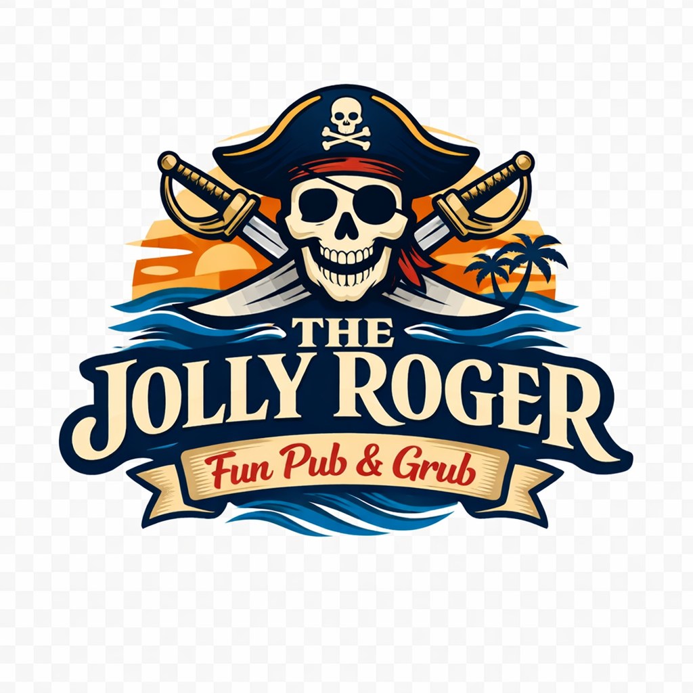
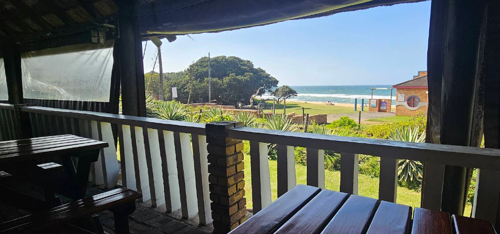
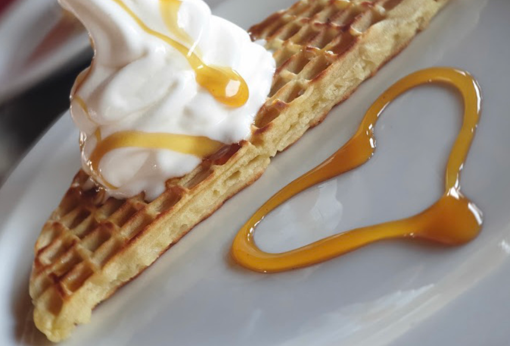
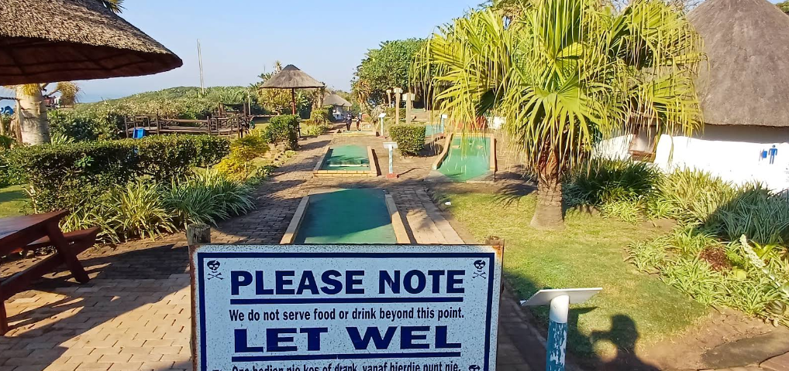
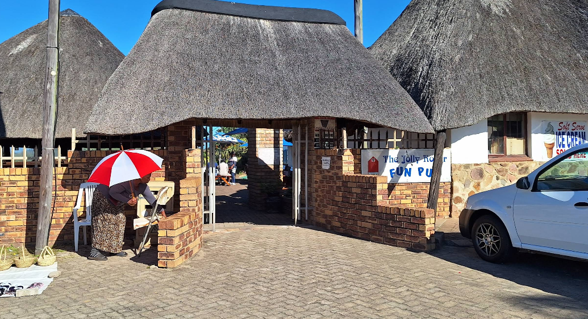

Beachfront dining, cold drinks, and family fun right on Hibberdene Main Beach.
Located right on the beachfront in Hibberdene, The Jolly Roger Fun Pub & Grub is a relaxed coastal restaurant where locals and holidaymakers gather for great food and ocean views. Enjoy burgers, pizza, seafood, and refreshing drinks while the kids enjoy putt-putt and waterslides.




📍 Marlin Drive, Main Beach, Hibberdene
📞 +27 39 699 3307
⏰ Open Daily from 8am